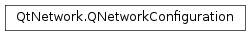

QNetworkConfiguration¶
Note
This class was introduced in Qt 4.7.
Synopsis¶
Functions¶
- def
__eq__(other) - def
__ne__(other) - def
bearerType() - def
bearerTypeFamily() - def
bearerTypeName() - def
children() - def
connectTimeout() - def
identifier() - def
isRoamingAvailable() - def
isValid() - def
name() - def
purpose() - def
setConnectTimeout(timeout) - def
state() - def
swap(other) - def
type()
Detailed Description¶
The
PySide2.QtNetwork.QNetworkConfigurationclass provides an abstraction of one or more access point configurations.
PySide2.QtNetwork.QNetworkConfigurationencapsulates a single access point or service network. In most cases a single access point configuration can be mapped to one network interface. However a single network interface may not always map to only one access point configuration. Multiple configurations for the same network device may enable multiple access points. An example device that could exhibit such a configuration might be a Smartphone which allows the user to manage multiple WLAN configurations while the device itself has only one WLAN network device.The
PySide2.QtNetwork.QNetworkConfigurationalso supports the concept of service networks. This concept allows the grouping of multiple access point configurations into one entity. Such a group is called service network and can be beneficial in cases whereby a network session to a particular destination network is required (e.g. a company network). When using a service network the user doesn’t usually care which one of the connectivity options is chosen (e.g. corporate WLAN or VPN via GPRS) as long as he can reach the company’s target server. Depending on the current position and time some of the access points that make up the service network may not even be available. Furthermore automated access point roaming can be enabled which enables the device to change the network interface configuration dynamically while maintaining the applications connection to the target network. It allows adaption to the changing environment and may enable optimization with regards to cost, speed or other network parameters.Special configurations of type
UserChoiceprovide a placeholder configuration which is resolved to an actual network configuration by the platform when asessionisopened. Not all platforms support the concept of a user choice configuration.
Configuration States¶
The list of available configurations can be obtained via
QNetworkConfigurationManager.allConfigurations(). A configuration can have multiple states. TheDefinedconfiguration state indicates that the configuration is stored on the device. However the configuration is not yet ready to be activated as e.g. a WLAN may not be available at the current time.The
Discoveredstate implies that the configuration isDefinedand the outside conditions are such that the configuration can be used immediately to open a new network session. An example of such an outside condition may be that the Ethernet cable is actually connected to the device or that the WLAN with the specified SSID is in range.The
Activestate implies that the configuration isDiscovered. A configuration in this state is currently being used by an application. The underlying network interface has a valid IP configuration and can transfer IP packets between the device and the target network.The
Undefinedstate indicates that the system has knowledge of possible target networks but cannot actually use that knowledge to connect to it. An example for such a state could be an encrypted WLAN that has been discovered but the user hasn’t actually saved a configuration including the required password which would allow the device to connect to it.Depending on the type of configuration some states are transient in nature. A GPRS/UMTS connection may almost always be
Discoveredif the GSM/UMTS network is available. However if the GSM/UMTS network loses the connection the associated configuration may change its state fromDiscoveredtoDefinedas well. A similar use case might be triggered by WLAN availability.QNetworkConfigurationManager.updateConfigurations()can be used to manually trigger updates of states. Note that some platforms do not require such updates as they implicitly change the state once it has been discovered. If the state of a configuration changes all relatedPySide2.QtNetwork.QNetworkConfigurationinstances change their state automatically.
-
class
PySide2.QtNetwork.QNetworkConfiguration¶ -
class
PySide2.QtNetwork.QNetworkConfiguration(other) Parameters: other – PySide2.QtNetwork.QNetworkConfigurationConstructs an invalid configuration object.
Creates a copy of the
PySide2.QtNetwork.QNetworkConfigurationobject contained inother.
-
PySide2.QtNetwork.QNetworkConfiguration.Type¶ This enum describes the type of configuration.
Constant Description QNetworkConfiguration.InternetAccessPoint The configuration specifies the details for a single access point. Note that configurations of type may be part of other QNetworkConfigurations of type . QNetworkConfiguration.ServiceNetwork The configuration is based on a group of QNetworkConfigurations of type . All group members can reach the same target network. This type of configuration is a mandatory requirement for roaming enabled network sessions. On some platforms this form of configuration may also be called Service Network Access Point (SNAP). QNetworkConfiguration.UserChoice The configuration is a placeholder which will be resolved to an actual configuration by the platform when a session is opened. Depending on the platform the selection may generate a popup dialog asking the user for his preferred choice. QNetworkConfiguration.Invalid The configuration is invalid.
Note
This enum was introduced in Qt 4.7.
-
PySide2.QtNetwork.QNetworkConfiguration.Purpose¶ Specifies the purpose of the configuration.
Constant Description QNetworkConfiguration.UnknownPurpose The configuration doesn’t specify any purpose. This is the default value. QNetworkConfiguration.PublicPurpose The configuration can be used for general purpose internet access. QNetworkConfiguration.PrivatePurpose The configuration is suitable to access a private network such as an office Intranet. QNetworkConfiguration.ServiceSpecificPurpose The configuration can be used for operator specific services (e.g. receiving MMS messages or content streaming).
Note
This enum was introduced in Qt 4.7.
-
PySide2.QtNetwork.QNetworkConfiguration.StateFlag¶ Specifies the configuration states.
Constant Description QNetworkConfiguration.Undefined This state is used for transient configurations such as newly discovered WLANs for which the user has not actually created a configuration yet. QNetworkConfiguration.Defined Defined configurations are known to the system but are not immediately usable (e.g. a configured WLAN is not within range or the Ethernet cable is currently not plugged into the machine). QNetworkConfiguration.Discovered A discovered configuration can be immediately used to create a new PySide2.QtNetwork.QNetworkSession. An example of a discovered configuration could be a WLAN which is within in range. If the device moves out of range the discovered flag is dropped. A second example is a GPRS configuration which generally remains discovered for as long as the device has network coverage. A configuration that has this state is also in state . If the configuration is a service network this flag is set if at least one of the underlying access points configurations has the Discovered state.QNetworkConfiguration.Active The configuration is currently used by an open network session (see QNetworkSession.isOpen()). However this does not mean that the current process is the entity that created the open session. It merely indicates that if a newPySide2.QtNetwork.QNetworkSessionwere to be constructed based on this configurationQNetworkSession.state()would returnQNetworkSession.Connected. This state implies the state.
Note
This enum was introduced in Qt 4.7.
-
PySide2.QtNetwork.QNetworkConfiguration.BearerType¶ Specifies the type of bearer used by a configuration.
Constant Description QNetworkConfiguration.BearerUnknown The type of bearer is unknown or unspecified. The PySide2.QtNetwork.QNetworkConfiguration.bearerTypeName()function may return additional information.QNetworkConfiguration.BearerEthernet The configuration is for an Ethernet interfaces. QNetworkConfiguration.BearerWLAN The configuration is for a Wireless LAN interface. QNetworkConfiguration.Bearer2G The configuration is for a CSD, GPRS, HSCSD, EDGE or cdmaOne interface. QNetworkConfiguration.Bearer3G The configuration is for a 3G interface. QNetworkConfiguration.Bearer4G The configuration is for a 4G interface. QNetworkConfiguration.BearerCDMA2000 The configuration is for CDMA interface. QNetworkConfiguration.BearerWCDMA The configuration is for W-CDMA/UMTS interface. QNetworkConfiguration.BearerHSPA The configuration is for High Speed Packet Access (HSPA) interface. QNetworkConfiguration.BearerBluetooth The configuration is for a Bluetooth interface. QNetworkConfiguration.BearerWiMAX The configuration is for a WiMAX interface. QNetworkConfiguration.BearerEVDO The configuration is for an EVDO (3G) interface. QNetworkConfiguration.BearerLTE The configuration is for a LTE (4G) interface.
-
PySide2.QtNetwork.QNetworkConfiguration.bearerType()¶ Return type: PySide2.QtNetwork.QNetworkConfiguration.BearerTypeReturns the type of bearer used by this network configuration.
If the bearer type is
unknownthePySide2.QtNetwork.QNetworkConfiguration.bearerTypeName()function can be used to retrieve a textural type name for the bearer.An invalid network configuration always returns the
BearerUnknownvalue.
-
PySide2.QtNetwork.QNetworkConfiguration.bearerTypeFamily()¶ Return type: PySide2.QtNetwork.QNetworkConfiguration.BearerTypeReturns the bearer type family used by this network configuration. The following table lists how
PySide2.QtNetwork.QNetworkConfiguration.bearerType()values map to values:bearer type bearer type family BearerUnknown,Bearer2G,BearerEthernet,BearerWLAN,BearerBluetooth(same type) BearerCDMA2000,BearerEVDO,BearerWCDMA,BearerHSPA,Bearer3GBearer3GBearerWiMAX,BearerLTE,Bearer4GBearer4GAn invalid network configuration always returns the
BearerUnknownvalue.
-
PySide2.QtNetwork.QNetworkConfiguration.bearerTypeName()¶ Return type: unicode Returns the type of bearer used by this network configuration as a string.
The string is not translated and therefore can not be shown to the user. The subsequent table shows the fixed mappings between
QNetworkConfiguration.BearerTypeand the bearer type name for known types. If theQNetworkConfiguration.BearerTypeis unknown this function may return additional information if it is available; otherwise an empty string will be returned.QNetworkConfiguration.BearerTypeValue BearerUnknownThe session is based on an unknown or unspecified bearer type. The value of the string returned describes the bearer type. BearerEthernetEthernet BearerWLANWLAN Bearer2G2G Bearer3G3G Bearer4G4G BearerCDMA2000CDMA2000 BearerWCDMAWCDMA BearerHSPAHSPA BearerBluetoothBluetooth BearerWiMAXWiMAX BearerEVDOEVDO BearerLTELTE This function returns an empty string if this is an invalid configuration, a network configuration of type
QNetworkConfiguration.ServiceNetworkorQNetworkConfiguration.UserChoice.
-
PySide2.QtNetwork.QNetworkConfiguration.children()¶ Return type: Returns all sub configurations of this network configuration in priority order. The first sub configuration in the list has the highest priority.
Only network configurations of type
ServiceNetworkcan have children. Otherwise this function returns an empty list.
-
PySide2.QtNetwork.QNetworkConfiguration.connectTimeout()¶ Return type: PySide2.QtCore.intReturns the connect timeout of this configuration.
-
PySide2.QtNetwork.QNetworkConfiguration.identifier()¶ Return type: unicode Returns the unique and platform specific identifier for this network configuration; otherwise an empty string.
-
PySide2.QtNetwork.QNetworkConfiguration.isRoamingAvailable()¶ Return type: PySide2.QtCore.boolReturns
trueif this configuration supports roaming; otherwise false.
-
PySide2.QtNetwork.QNetworkConfiguration.isValid()¶ Return type: PySide2.QtCore.boolReturns
trueif thisPySide2.QtNetwork.QNetworkConfigurationobject is valid. A configuration may become invalid if the user deletes the configuration or the configuration was default-constructed.The addition and removal of configurations can be monitored via the
PySide2.QtNetwork.QNetworkConfigurationManager.
-
PySide2.QtNetwork.QNetworkConfiguration.name()¶ Return type: unicode Returns the user visible name of this configuration.
The name may either be the name of the underlying access point or the name for service network that this configuration represents.
-
PySide2.QtNetwork.QNetworkConfiguration.__ne__(other)¶ Parameters: other – PySide2.QtNetwork.QNetworkConfigurationReturn type: PySide2.QtCore.boolReturns
trueif this configuration is not the same as theotherconfiguration given; otherwise returnsfalse.
-
PySide2.QtNetwork.QNetworkConfiguration.__eq__(other)¶ Parameters: other – PySide2.QtNetwork.QNetworkConfigurationReturn type: PySide2.QtCore.boolReturns
true, if this configuration is the same as theotherconfiguration given; otherwise returnsfalse.
-
PySide2.QtNetwork.QNetworkConfiguration.purpose()¶ Return type: PySide2.QtNetwork.QNetworkConfiguration.PurposeReturns the purpose of this configuration.
The purpose field may be used to programmatically determine the purpose of a configuration. Such information is usually part of the access point or service network meta data.
-
PySide2.QtNetwork.QNetworkConfiguration.setConnectTimeout(timeout)¶ Parameters: timeout – PySide2.QtCore.intReturn type: PySide2.QtCore.boolSets the connect timeout of this configuration to
timeout. This allows control of the timeout used byQAbstractSocketto establish a connection.Warning
This will have no effect if the bearer plugin doesn’t have the CanStartAndStopInterfaces capability.
Returns true if succeeded.
-
PySide2.QtNetwork.QNetworkConfiguration.state()¶ Return type: PySide2.QtNetwork.QNetworkConfiguration.StateFlagsReturns the current state of the configuration.
-
PySide2.QtNetwork.QNetworkConfiguration.swap(other)¶ Parameters: other – PySide2.QtNetwork.QNetworkConfigurationSwaps this network configuration with
other. This function is very fast and never fails.
-
PySide2.QtNetwork.QNetworkConfiguration.type()¶ Return type: PySide2.QtNetwork.QNetworkConfiguration.TypeReturns the type of the configuration.
A configuration can represent a single access point configuration or a set of access point configurations. Such a set is called service network. A configuration that is based on a service network can potentially support roaming of network sessions.
© 2018 The Qt Company Ltd. Documentation contributions included herein are the copyrights of their respective owners. The documentation provided herein is licensed under the terms of the GNU Free Documentation License version 1.3 as published by the Free Software Foundation. Qt and respective logos are trademarks of The Qt Company Ltd. in Finland and/or other countries worldwide. All other trademarks are property of their respective owners.